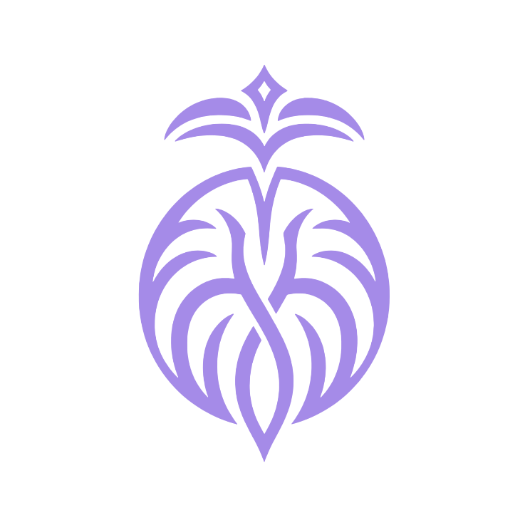

原创 IP · 《上帝右手》
黑暗谷 · 四族
婆罗洲雨林深处，岩石穹顶之下，阳光只从南侧进来，所以南明北暗：瑶南最亮，朔影最暗。四族在这片封闭的谷地里“千百年间休养繁衍”，彼此提防。
四族疆域占比（约）
- 特斯 约 60%
- 喇葛 约 20%
- 瑶南 约 14%
- 朔影 约 7%
信念
- 崇尚精神的力量：平时不显，打起仗来能把一族人的心拧成一股，士气不坠。
- 字比像重要。黑暗谷的古人“不爱刻像，只刻字”，特斯的古文字一脉相承。
- 秩序与血统并重：废立族长，要召集全族长老会。

特斯
the Tesi
西、中部 · 全谷最大的一块
断裂的岩层、赤色绝壁与河谷
特征
- 骄傲，重名分，重颜面；对路过的外人，只是礼貌颔首。
- 族长制，历代相传；羽冠分等，顶阶长羽只有族长与顶尖将领配戴。
- 重步兵、长矛与巨盾，防线绵延数百里。
- 麻布印染繁复的几何图腾，尤其爱羽毛。
信念
- 顺应野性：外人一句话概括喇葛——“顺应野性弱肉强食”。强者为尊。
- 人和兽不是主仆。二心一魂结成之后，灵兽一死，人跟着“魂裂”。
- 规矩森严：与特斯通婚要仪式，混居要请示长老，“连火塘的方位都各有讲究”。

喇葛
the Lage
东部 · 约两成
林海与巨树树屋
特征
- 彪悍好战；近身肉搏，全谷无人能与之争锋。
- 兽军四军，由兽王的四个子女各领一军：狮王军、夜豹军、狡狐军、巨象军。
- “夜豹擅袭，狮王擅攻，狡狐擅计，巨象擅守。”
- 战时面绘赤红与黑色油彩，身披兽皮战甲。
信念
- 看全局，算可能：从细微处看出整体，从现在推出将来。
- 一痛俱痛：战场上同伴所受的痛，会顺着心灵相通，由所有连在一起的战士共同分担。
- 守，不求扩张。朴素，不雕花，不繁饰。

瑶南
the Yaonan
东南 · 长平原
草海与地底聚落
特征
- 沉静、克制，谦辞里藏着自负。
- 化整为零，分散袭扰；借平原下的天然洞窟与坑道打伏击。
- 藤盾与重盾阵。
- 灰袍，深灰头巾裹住口鼻；居室以灰白玄武岩块垒砌，不用雕花原木。
信念
- 不求打赢，求不被打垮：“与世无争，只擅守拙”。
- 理性，却把爱奉为至上：伴侣同绳而行。“信任是浪漫的誓言，也是生死相托的实践。”
- 一草一木，皆可为用：“任何寻常之物，到了他们手中，都能化为致命的武器。”

朔影
the Shuoying
北端 · 全谷最小的一族
绳网与紫竹林边境
特征
- 惜字如金，冷静。
- 生活在绳上：“朔影的孩子会走路就会爬绳，三岁能在绳上站，五岁能在绳上跑。”
- 铁军九千，据险固守，连喇葛主力也难以强攻；吹箭、投石索、飞索。
- 及膝长袍以柔韧树藤和打磨光滑的竹片缝成，称“竹甲”；族人惯穿深墨紫长袍。
相克环
四族之间，一环扣一环：每一族，都有一族难以应付。
喇葛特斯瑶南朔影
- 喇葛克特斯同属近战，特斯在力量与速度上难敌兽军。
- 特斯克瑶南特斯精神层面的影响与干扰，能削弱瑶南的直觉。
- 瑶南克朔影瑶南的直觉，能识破朔影依靠自然布置的陷阱与埋伏。
- 朔影克喇葛朔影以拒敌于百步之外闻名，兽军的锤落不到百步之外。
“只是相克。相生，则需要两族放下隔阂，通力合作，方能实现。”